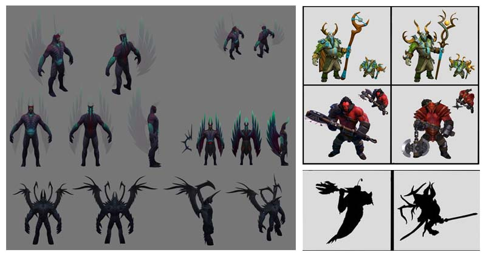

Dota 2 adalah game multiplayer online battle arena (MOBA) gratis yang dikembangkan dan diterbitkan oleh Valve Corporation. Ini adalah sekuel Defense of the Ancients (DotA), mod Warcraft III yang populer, dan telah menjadi salah satu game esports paling populer di dunia.
Di Dota 2, dua tim yang masing-masing terdiri dari lima pemain bersaing satu sama lain di peta yang disebut "dota". Setiap pemain mengontrol karakter pahlawan dengan serangkaian kemampuan, kekuatan, dan kelemahan yang unik. Tujuan permainan ini adalah untuk menghancurkan Kuno tim musuh, sebuah bangunan besar yang terletak di markas mereka.
Permainan ini dibagi menjadi dua fase utama: fase laning dan fase pertarungan tim. Selama fase laning, pemain mencoba mendapatkan keuntungan dengan mendapatkan emas dan poin pengalaman, yang dapat digunakan untuk menaikkan level pahlawan dan membeli peralatan. Fase pertarungan tim adalah saat kedua tim bentrok dalam pertempuran, mencoba menguasai peta dan mendorong ke arah markas musuh.
Gameplay Dota 2 kompleks dan strategis, mengharuskan pemain untuk bekerja sama sebagai satu tim dan membuat keputusan taktis berdasarkan keadaan permainan saat ini. Game ini juga menampilkan daftar besar lebih dari 120 pahlawan, masing-masing dengan kemampuan dan gaya bermainnya yang unik, memungkinkan berbagai pengalaman permainan.
Dota 2 juga dikenal dengan kancah esports yang kuat, dengan banyak turnamen dan liga terkenal yang berlangsung sepanjang tahun. Game ini memiliki banyak penggemar dan pemain di seluruh dunia, dengan jutaan orang menonton pertandingan profesional dan memainkan game itu sendiri.Dota 2 menampilkan daftar besar lebih dari 120 karakter unik, masing-masing dengan latar belakang, kepribadian, dan kemampuan mereka sendiri. Seni konsep karakter Dota 2 memainkan peran penting dalam menghidupkan para pahlawan ini, menyampaikan karakteristik mereka yang berbeda dan membantu membenamkan pemain di dunia game.
Salah satu aspek paling mencolok dari konsep seni karakter Dota 2 adalah keragaman desainnya. Setiap pahlawan memiliki penampilan yang unik, mulai dari yang berlapis baja berat dan mengesankan hingga yang ramping dan gesit. Desain menarik inspirasi dari berbagai sumber, termasuk mitologi, cerita rakyat, dan budaya pop. Seni konsep sering kali mencakup rendering mendetail dari peralatan pahlawan, mulai dari pedang dan busur hingga tongkat sihir dan tongkat sihir
Desain pahlawan sering dikembangkan dalam kolaborasi erat antara tim pengembangan game dan seniman konsep, dengan fokus pada pembuatan karakter yang menarik secara visual dan seimbang untuk gameplay. Para seniman bekerja untuk menciptakan karakter yang khas dan berkesan, dengan berbagai kemampuan yang dapat digunakan dengan berbagai cara untuk mencapai tujuan strategis.
Salah satu aspek penting dari seni konsep karakter Dota 2 adalah perhatian terhadap detail. Setiap pahlawan memiliki siluet, palet warna, dan tekstur yang unik, dan kemampuan mereka seringkali juga berbeda secara visual. Para seniman juga bekerja untuk menyampaikan kepribadian dan latar belakang pahlawan melalui penampilan mereka, seperti Shadow Fiend yang menyeramkan dan merenung atau Raja Kera yang suka bermain dan nakal.
Aspek lain dari seni konsep karakter Dota 2 adalah pengembangan pahlawan baru yang berkelanjutan. Setiap pahlawan baru dibuat dengan hati-hati agar sesuai dengan daftar permainan yang ada dan menyeimbangkan dinamika permainan, sambil juga memperkenalkan desain yang segar dan menarik ke dalam permainan. Seni konsep untuk pahlawan baru sering menimbulkan banyak desas-desus di kalangan penggemar Dota 2, yang sangat menantikan perilisan pahlawan baru dan karya seni yang menyertainya.
Secara keseluruhan, seni konsep karakter Dota 2 adalah bagian penting dari identitas visual game dan berkontribusi secara signifikan terhadap pengalaman imersif bermain game. Dari desain hero yang mendetail hingga lingkungan dan peralatan yang kaya akan render, seni konsep membantu menciptakan dunia yang menakjubkan secara visual dan menarik secara emosional bagi para pemain.